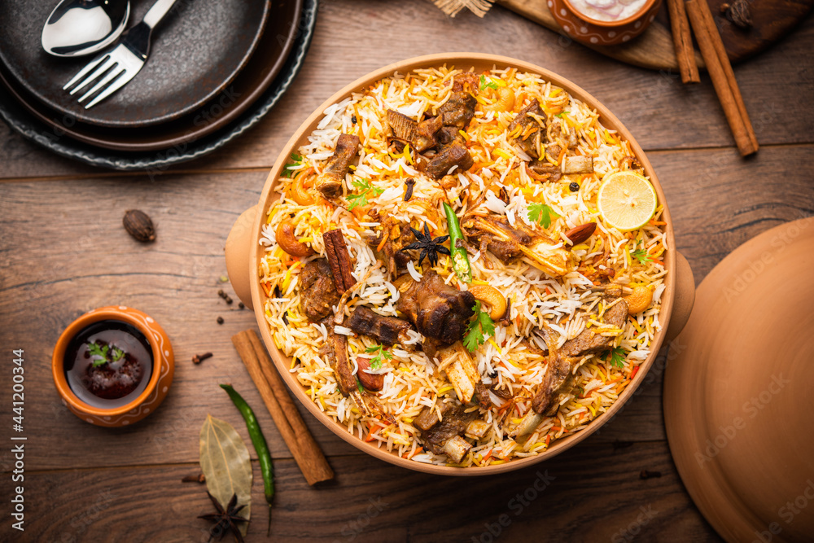

Dum Biryani
Welcome to the ultimate guide for making Dum Biryani! These special occasional dish are perfect for satisfying your stomach without overindulging. Follow this simple recipe to create delicious, aromatic, and flavorful Dum Biryani that everyone will love.

Tasty Biryani looks
Ingredients
- Basmati rice
- Chicken
- Onions
- Yogurt
- Ghee
- Biryani masala
Instructions
- Marinate chicken: Mix the chicken with yogurt, biryani masala, and a pinch of salt. Let it sit for 30 minutes.
- Parboil rice: Boil the soaked Basmati rice in salted water until it is 70-80% cooked (still slightly firm). Drain completely.
- Fry onions: Heat ghee in a deep pot and fry the sliced onions until they turn golden brown. Remove half for later decoration.
- Cook meat: Add the marinated chicken to the pot with the remaining onions. Cook on medium heat for 10-12 minutes until a thick gravy forms.
- Layer elements: Layer the parboiled rice evenly over the chicken base inside the pot. Top with the reserved golden-fried onions.
- Steam (Dum): Cover the pot tightly with a lid or foil to trap the steam. Cook on the lowest heat setting for 15 minutes before serving.